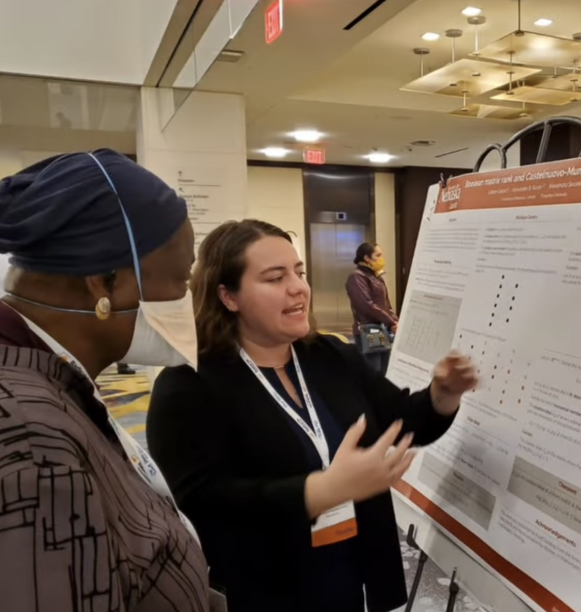

Research
In mathematics, my primary focus is in commutative algebra. Recently, I have been interested in neural ideals and monomial ideals! I also enjoy learning about math education, and computer science.
Publications
- Adjoints of Morphisms of Neural Codes J. Geraci, A.B. Kunin, A. Seceleanu Submitted. arXiv:2603.10837
- Boolean Matrix Rankv via Monomial Ideals J. Geraci, A.B. Kunin, A. Seceleanu Submitted. arXiv:2509.09570
- Products and Powers of Principal Symmetric Ideals E. Dannetun, B.Fang, R. Formenti, B. Gao, J. Geraci, R. Kogel, Y. Li, S. Mandal, V.Rupasinghe, A..Seceleanu, D. Tran and N. Walker. Journal of algebra and Its Applications,In press. arXiv:2402.16214
- Graph Universal Cycles on Combinatorial Objects Amelia Cantwell, Juliann Geraci, Anant Godbole, and Cristobal Padilla. Advances in Applied Mathematics, Volume 127. 2019. arXiv:1911.07905
Invited Talks
-
Neural Rings with Applications to Boolean Matrix Factorization
- March 2026, Boston College, AMS Eastern Sectional
- January 2026, Washington D.C., Joint Mathematics Meetings
- October 2025, Tulane University, AMS Southeastern Sectional
- October 2025, Tulane University, AMS Southeastern Sectional
- May 2025, University of Wisconsin - Madison, AWM Research Symposium
- April 2025, University of Connecticut, AMS Eastern Sectional Meeting
- April 2025, SUNY Oswego, Alumni Series
- November 2024, Grinnell College, Great Plains Alliance Series
- March 2023, Dordt College, Great Plains Alliance
Boolean Matrix Rank via Monomial Ideals
Neural Rings and Ideals (Undergraduate Audience)

For more detailed information and more local talks, see my CV!